Thomas
TANAY
Senior Research scientist at Huawei Technologies Ltd, Noah's Ark Lab (London, UK).
Selected publications
GRVS: a Generalizable and Recurrent Approach to Monocular Dynamic View Synthesis.
Tanay*
, Brahimi*, Nazarczuk, Catley‑Chandar, Moreau, Zhang and Pérez‑Pellitero
arXiv, 2025
Project page
arXiv
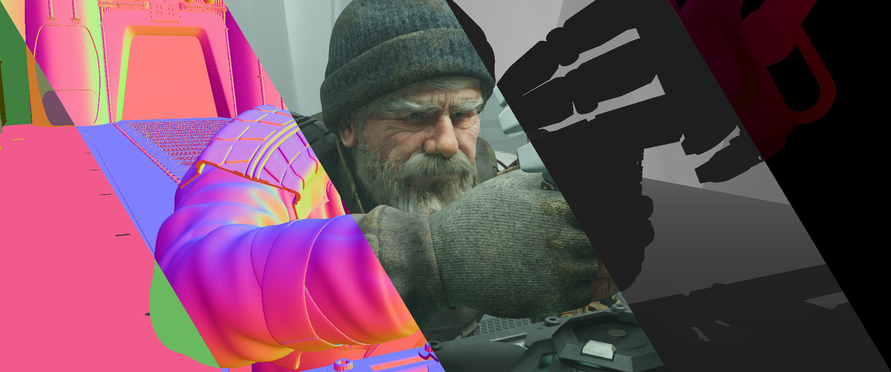
Charge: A Comprehensive Benchmark and Dataset for Dynamic Novel View Synthesis.
Nazarczuk,
Tanay
, Zhang and Pérez‑Pellitero
arXiv, 2025
Project page
Dataset
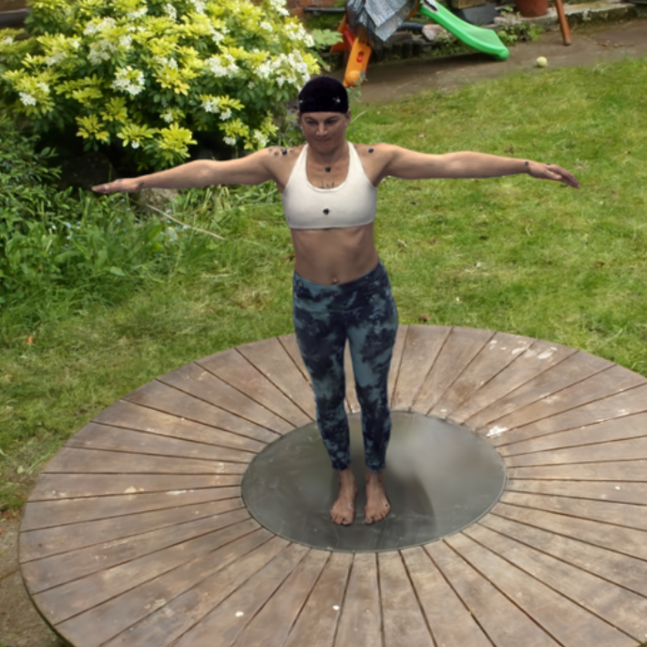
Better Together: Unified Motion Capture and 3D Avatar Reconstruction.
Moreau, Brahimi, Shaw, Papaioannou,
Tanay
, Zhang and Pérez‑Pellitero
arXiv, 2025
arXiv
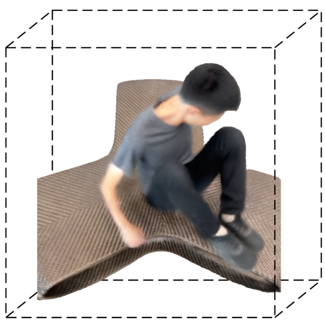
ViDAR: Video Diffusion‑Aware 4D Reconstruction From Monocular Inputs.
Nazarczuk*, Catley‑Chandar*,
Tanay
, Zhang, Slabaugh and Pérez‑Pellitero
NeurIPS, 2025
Project page
arXiv
Code
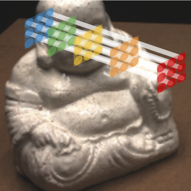
Global Latent Neural Rendering.
Tanay
and Maggioni
CVPR, 2024
Project page
arXiv
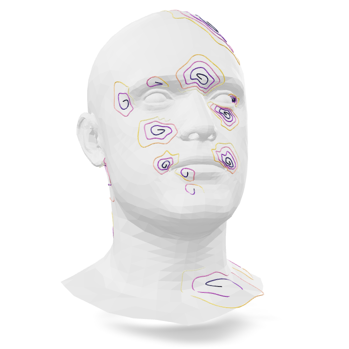
Adaptive Spiral Layers for Efficient 3D Representation Learning on Meshes.
Babiloni, Maggioni,
Tanay
, Deng, Leonardis and Zafeiriou
ICCV, 2023
CVF
Code
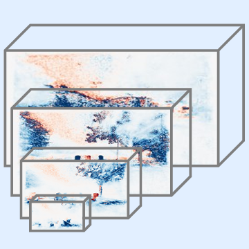
Efficient View Synthesis and 3D-based Multi-Frame Denoising with Multiplane Feature Representations.
Tanay
, Leonardis, and Maggioni
CVPR, 2023
Project page
arXiv
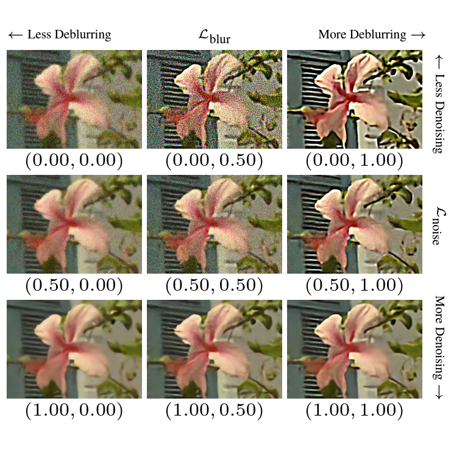
Tunable Convolutions with Parametric Multi-Loss Optimization.
Maggioni,
Tanay
, Babiloni, McDonagh, and Leonardis
CVPR, 2023
arXiv
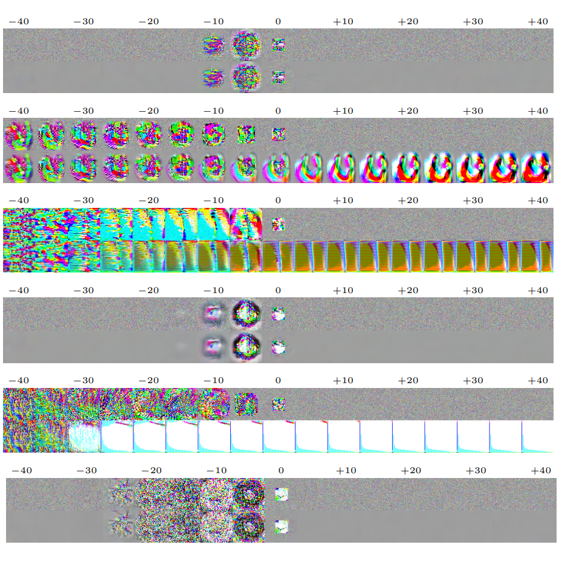
Diagnosing and Preventing Instabilities in Recurrent Video Processing.
Tanay
, Sootla, Maggioni, Dokania, Torr, Leonardis, and Slabaugh
TPAMI, 2022
arXiv
TPAMI
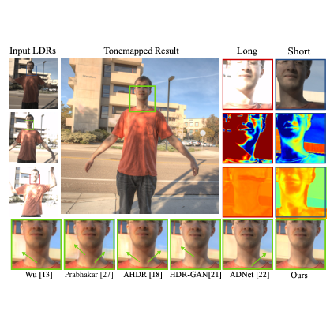
FlexHDR: Modelling Alignment and Exposure Uncertainties for Flexible HDR Imaging.
Catley‑Chandar,
Tanay
, Vandroux, Leonardis, Slabaugh, and Pérez‑Pellitero
TIP, 2022
Project page
arXiv
TIP
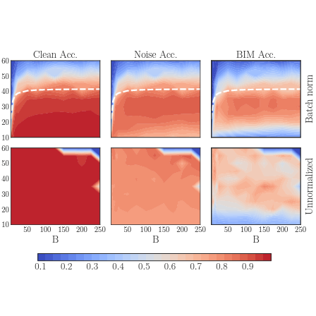
Batch Normalization is a Cause of Adversarial Vulnerability.
Galloway, Golubeva,
Tanay
, Moussa and Taylor
arXiv, 2019
arXiv
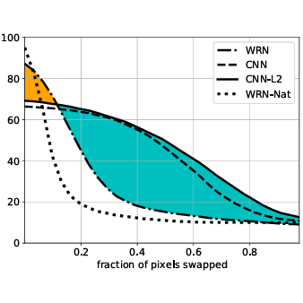
Adversarial Training versus Weight Decay.
Galloway,
Tanay
and Taylor
arXiv, 2018
arXiv
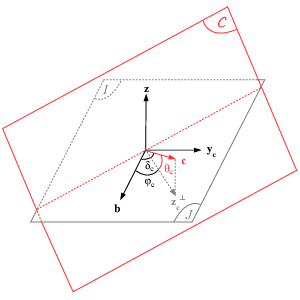
A Boundary Tilting Persepective on the Phenomenon of Adversarial Examples.
Tanay
and Griffin
arXiv, 2016
arXiv
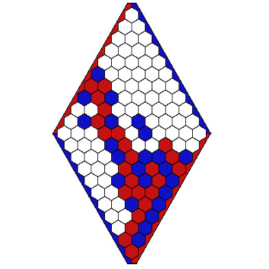
HeX and the Single Anthill: Playing Games with Aunt Hillary.
Bishop, Nasuto,
Tanay
, Roesch and Spencer
Fundamental Issues of Artificial Intelligence, 2016
Workshops and Challenges
Sparse Neural Rendering Challenge.
(Organizer)
Nazarczuk,
Tanay
, Catley-Chandar, Shaw, Timofte, Pérez-Pellitero
Advances in Image Manipulation workshop, ECCV, 2024
Webpage
Dataset and Benchmark
Methods and Results
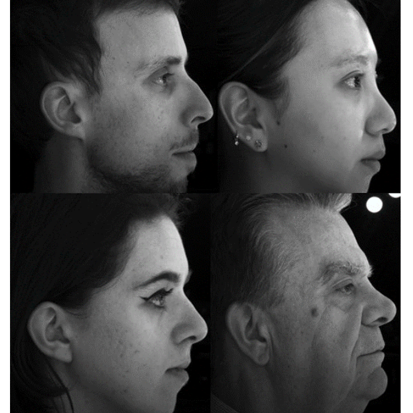
MPFER‑H: Multiplane Features Encoder‑Renderer for Human Heads.
(Ranked #1)
Tanay
and Maggioni
To NeRF or not to NeRF: a View Synthesis Challenge for Human Heads, ICCV, 2023
Webpage
CVF
CodaLab
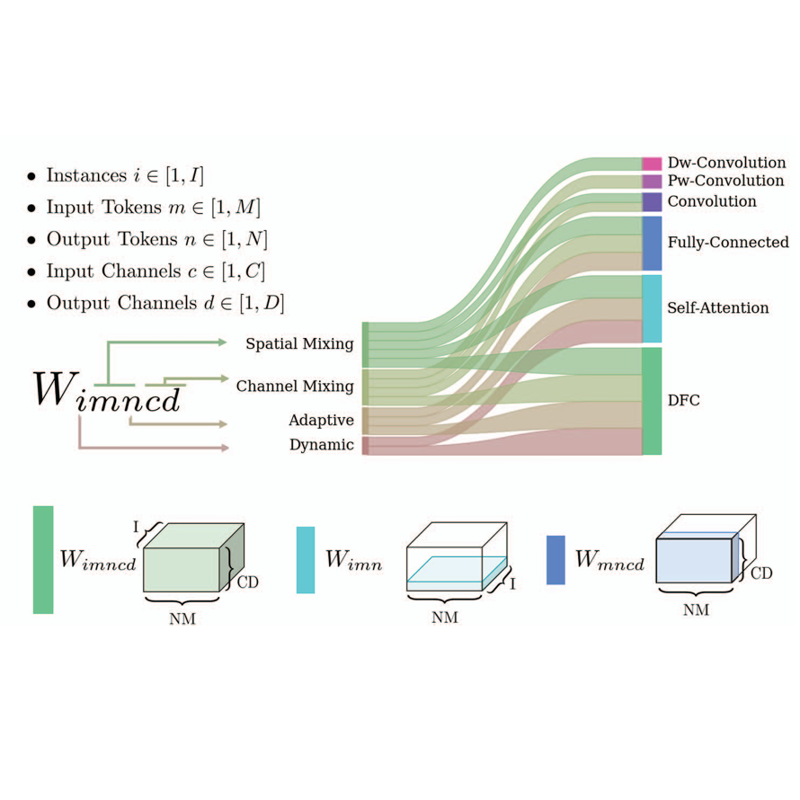
Factorized Dynamic Fully Connected Layers for Neural Networks.
Babiloni,
Tanay
, Deng, Maggioni, and Zafeiriou.
Workshop on Resource Efficient Deep Learning for Computer Vision, ICCV, 2023
CVF
Multi‑scale network with deformable temporal fusion for compressed video restoration.
Song, Huang, Maggioni, Fu, Xiao, Li and
Tanay
NTIRE 2021 Challenge on Quality Enhancement of Compressed Video, CVPR, 2021
CVF
Learnable Non‑local Image Denoising.
Maggioni, Marras,
Tanay
, Slabaugh and Yan
NTIRE 2020 Challenge on Real Image Denoising, CVPR, 2020
CVF
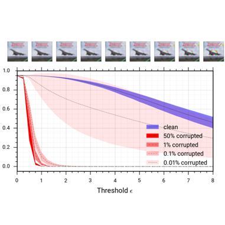
Built‑in Vulnerabilities to Imperceptible Adversarial Perturbations.
(Oral)
Tanay
, Andrews and Griffin
BMVA Technical Meeting, 2019
arXiv
Posts
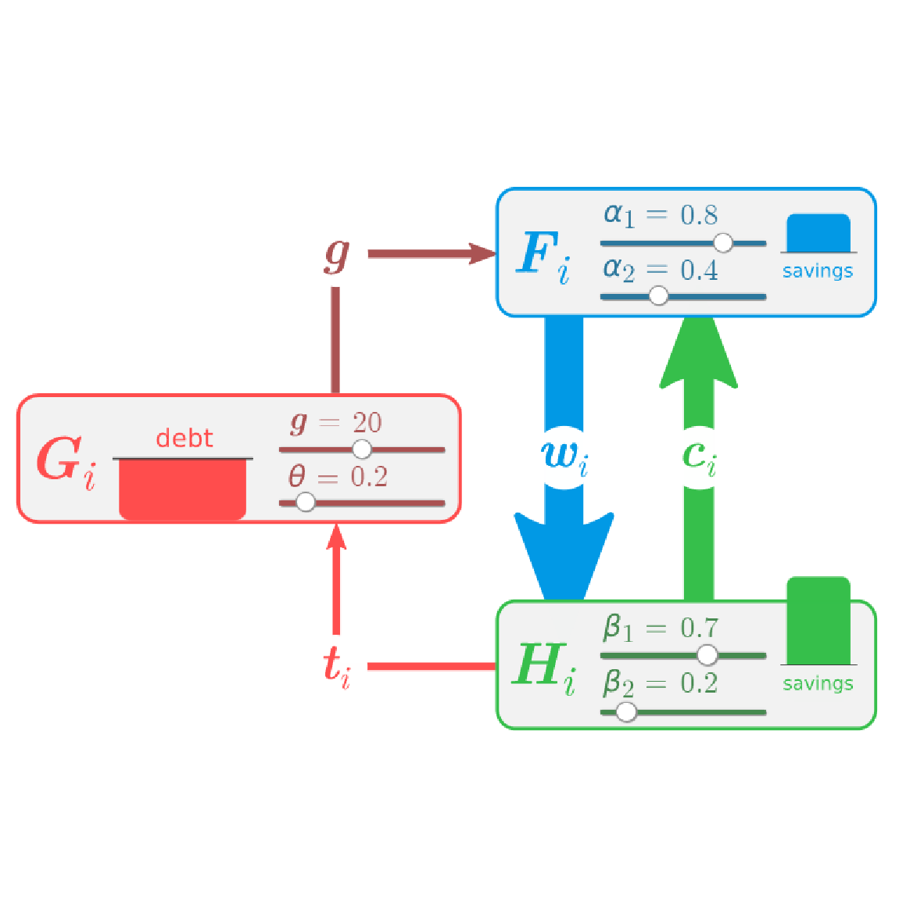
How Government Expenditures Finance Themselves.
A macroeconomic model from Wynne Godley and Marc Lavoie.
2022
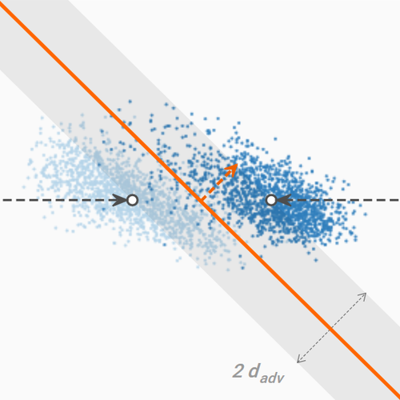
A New Angle on L2 Regularization.
An explorable explanation of adversarial examples in linear classification.
2018
KDnuggets
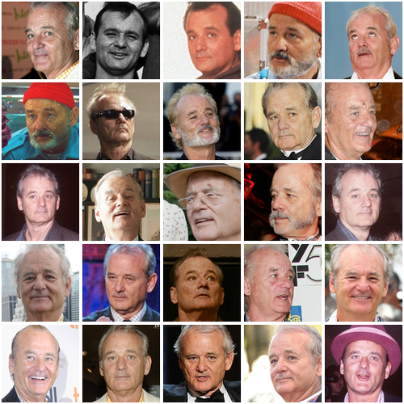
Face Verification and Clustering.
2015
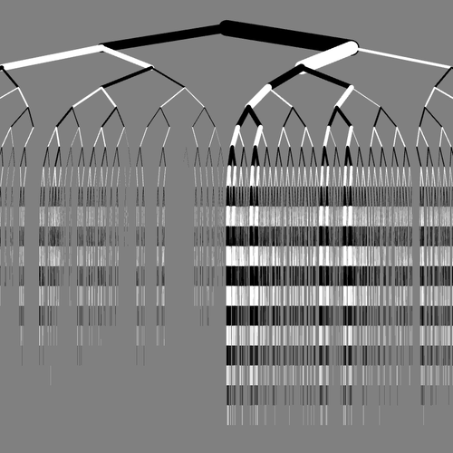
Stochastic Diffusion Search Applied to Trees.
2013